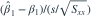
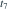

正态一元线性模型有8组固定自变量观测，含截距，误差独立同分布为  ，。令 。则
，。令 。则
，。令 。则 
服从？- A

- B

- C

- D

我已思考，展开答案与解析
正确答案：C
- 斜率标准化后为标准正态；，且与斜率估计独立。
- 用残差标准差替代σ后，构造自由度6的t统计量。
易错提醒同时估计截距和斜率消耗两个自由度。
考后回忆 · 条件重建 · 回忆9、12
依据考试回忆重建；数字、选项和必要条件为补充设定，非原题。
，。令 。则 
服从？
考后回忆 · 条件重建 · 回忆9、12
依据考试回忆重建；数字、选项和必要条件为补充设定，非原题。